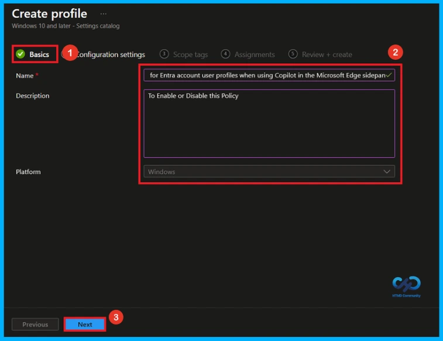
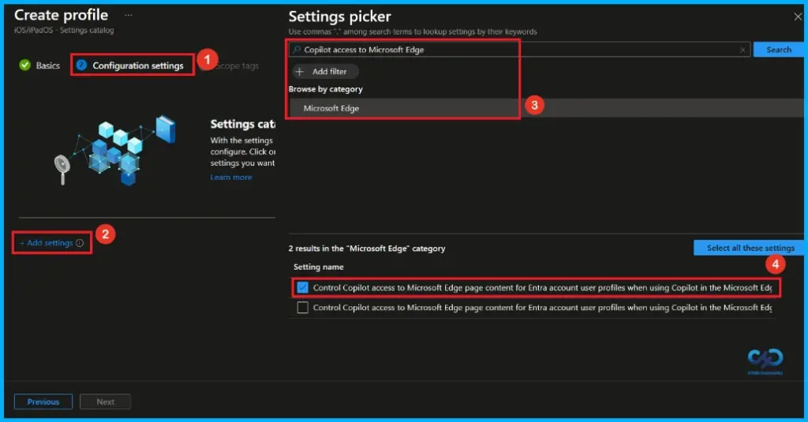
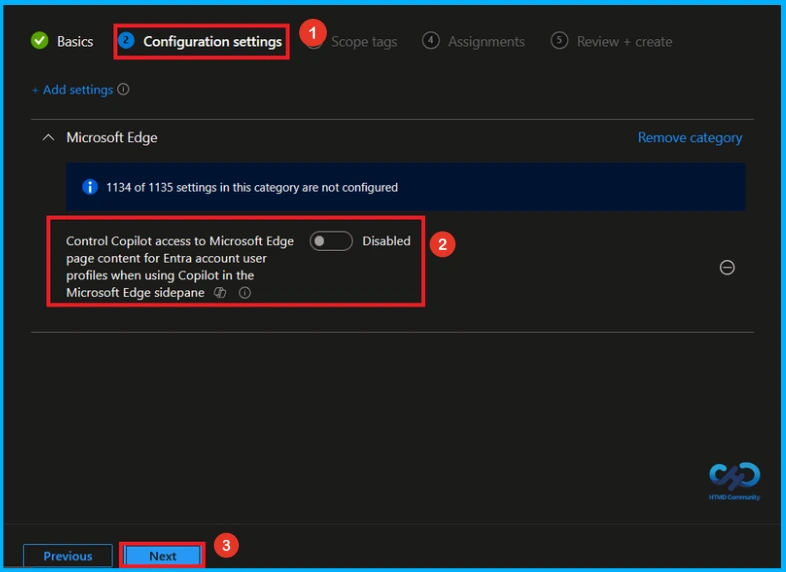
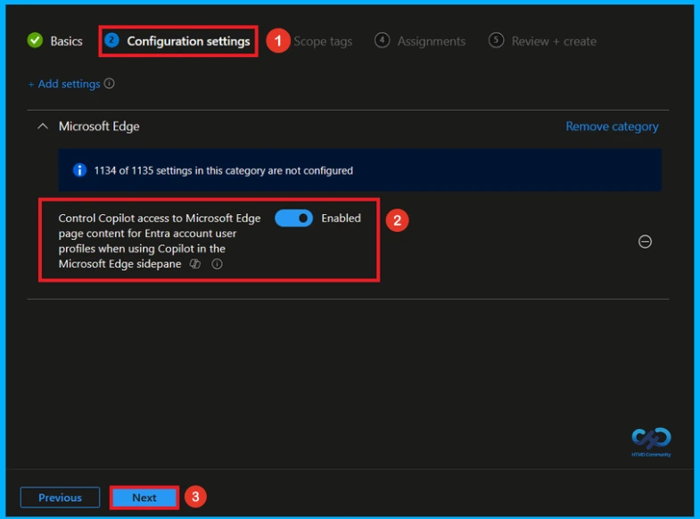
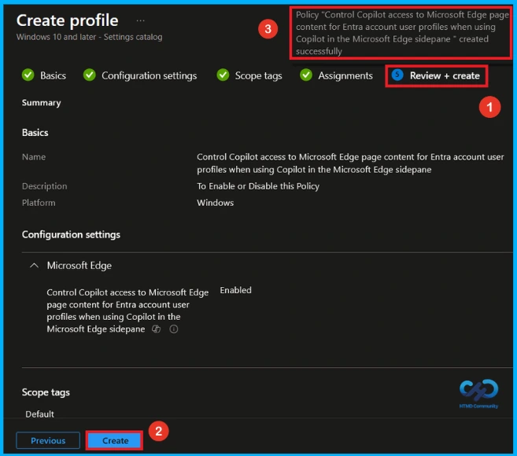
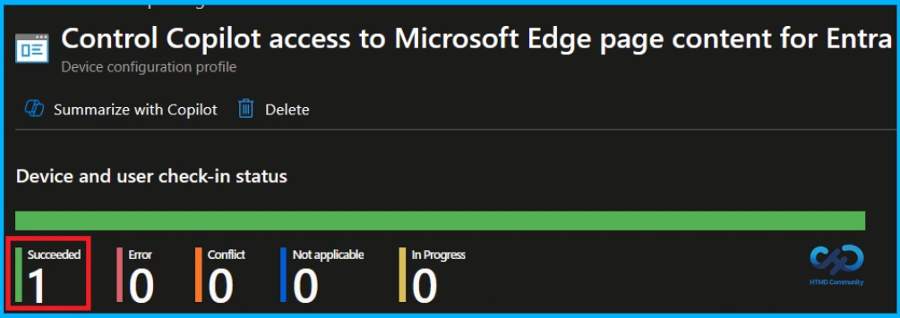
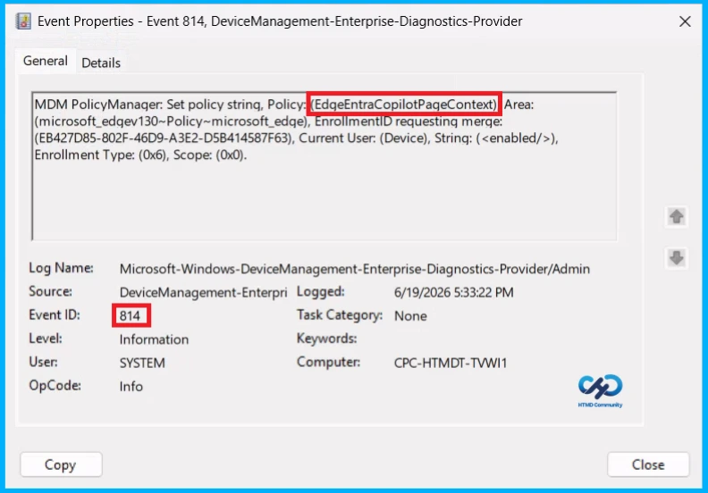
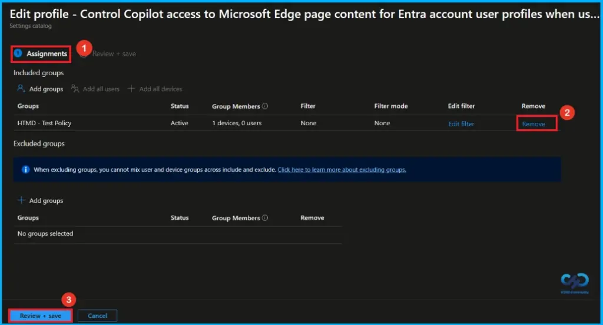
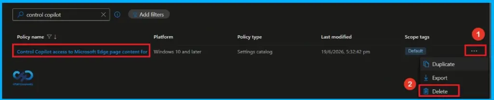

Key Takeaways
- Copilot can use webpage content in the Edge sidebar to give summaries and answers.
- This policy applies to users signed into Edge with a work or school (Entra) account.
- If not configured, access is usually on outside the EU and off in the EU.
- Pages protected by DLP (Data Loss Prevention) cannot be accessed by Copilot, even if the policy is enabled.
Hey, let’s discuss about Configure Copilot Page Context Access in Microsoft Edge using Intune for Secure AI Assistance. This policy controls whether Copilot in the Microsoft Edge sidebar can access content from the web pages a user is viewing. When enabled, Copilot can use page content to provide features such as page summaries and context-based answers. It applies to users who are signed in to Microsoft Edge with an Entra account and use Copilot in the Edge sidebar, including Microsoft 365 Copilot Business Chat and Microsoft Copilot with enterprise data protection (EDP).
Table of Contents
Configure Copilot Page Context Access in Microsoft Edge using Intune for Secure AI Assistance
If the policy is disabled, Copilot cannot access page content. If the policy is not configured, access is enabled by default for users outside the EU and disabled by default for users in the EU. Users can also manage this setting in Microsoft Edge. However, if a page is protected by Data Loss Prevention (DLP) policies, Copilot will not be able to access its content even when this policy is enabled, helping to protect sensitive information.
How to Create this Policy
To create a policy, the first step that you must do is to sign in to the Microsoft Intune Admin Centre. After clicking on the Device on the left side of the screen, select Configuration and then click Create and select New Policy.

Create a Profile
When you click on the New Policy, a box will appear in which you can specify the platform and profile type. From that, choose the platform as Windows 10 and later and profile type as Settings Catalog. Then, click Next to continue.

Give Name and Description
In the Basics Tab, you can give an appropriate name and description. So you can identify the policy later by using its name. Giving the policy a Name is mandatory and Description is not important. Here, the policy name is Control Copilot access to Microsoft Edge page content for Entra account user profiles when using Copilot in the Microsoft Edge sidepane. Click Next to Proeed.

Configure this Policy
Here you can see that the +Add settings in a blue color, click on that. Here now you can see the settings picker when you click the add settings. Then, select the Microsoft Edge, and there you can see different policies. So, in those policies select the Control Copilot access to Microsoft Edge page content for Entra account user profiles when using Copilot in the Microsoft Edge sidepane.

Disable this Policy
Once you have selected One Settings Auditing and closed the Settings picker. You will see it on the Configuration page. This setting is disabled by default. If you want to continue with this you can click on the next.

Enable this Policy
If we enable or configure this policy, you can allow the Control Copilot access to Microsoft Edge page content for Entra account user profiles when using Copilot in the Microsoft Edge sidepane by toggling the switch from left to right.Then, you can click the Next button to proceed.

What is Scope Tag
Scope tags are used to control which administrators can see and manage this policy in the Intune admin center. In the Scope tags section, you can assign one or more scope tags to the policy so that only specific IT teams or administrators have access to it. To add a scope tag, click Select scope tags, choose the required tag, and then click Next.

Assign the Policy to Groups
In the Assignments section, click Add groups under Included groups and select the required user or device groups. Assigning the policy ensures it is applied only to the intended users or devices, such as test groups or production environments. Then click on the Next.

Review and Deploy the Policy
At the final Review + Create step, we see a summary of all configured settings for the new profile; after reviewing the details and making any necessary changes by clicking Previous. We click Create to finish, and a notification confirms that the ” Control Copilot access to Microsoft Edge page content for Entra account user profiles when using Copilot in the Microsoft Edge sidepane created successfully”.

Monitoring Status of this Policy
To check whether the policy is successfully applied, sign in to the Microsoft Intune admin center and go to Devices > Configuration profiles. Select the One Settings Auditing policy from the list. This opens the policy overview page, where you can see a quick summary of its deployment status.

Client-Side Verification
To confirm if a policy has been applied, use the Event Viewer on the client device. Go to Applications and Services Logs > Microsoft >Windows >Device Management > Enterprise Diagnostic Provider > Admin. From the list of policies, use the Filter Current Log option and search for Intune event 814.
MDM PolicyManager: Set policy strinq, Policy: EdqeEntraCopilotPageContext),Area:
(microsoft_edqev130~Policy~microsoft_edqe), EnrollmentID requesting merge:
(EB427D85-802F-46D9-A3E2-D5B414587F63), Current User: (Device), String: (),
Enrollment Type: (0x6), Scope: (0x0).

How to Remove Assigned Group from this Policy
If you want to stop the policy from applying to certain users or devices, you can remove the assigned groups. Go to Devices > Configuration profiles, select the policy, and open Assignments. Under Included groups or Excluded groups, select the group you want to remove and delete it from the assignment list. Once the group is removed, the policy will no longer apply to those users or devices after the next Intune sync.
For detailed information, you can refer to our previous post – Learn How to Delete or Remove App Assignment from Intune using by Step-by-Step Guide.

How to Delete this Policy from Intune
If you want to delete this policy for any reason, you can do it easily. First, search for the policy name in the configuration section. When you find the policy name, click the 3-dot menu next to it and tap the Delete option.
For detailed information, you can refer to our previous post – Learn How to Delete or Remove App Assignment from Intune using by Step-by-Step Guide.

Need Further Assistance or Have Technical Questions?
Join the LinkedIn Page and Telegram group to get the latest step-by-step guides and news updates. Join our Meetup Page to participate in User group meetings. Also, Join the WhatsApp Community and WhatsApp Channel to get the latest news on Microsoft Technologies. We are there on Reddit as well.
Author
Anoop C Nair has been Microsoft MVP from 2015 onwards for 10 consecutive years! He is a Workplace Solution Architect with more than 22+ years of experience in Workplace technologies. He is also a Blogger, Speaker, and Local User Group Community leader. His primary focus is on Device Management technologies like SCCM and Intune. He writes about technologies like Intune, SCCM, Windows, Cloud PC, Windows, Entra, Microsoft Security, Career, etc.